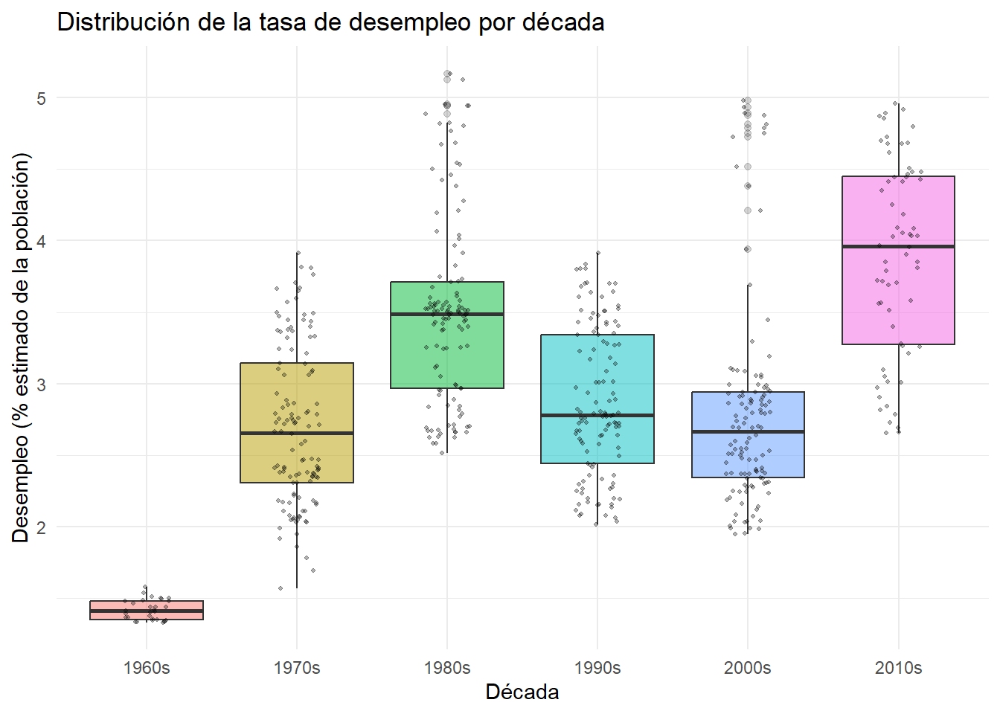

library(ggplot2)
library(plotly)
library(dplyr)
library(lubridate)Gráficos interactivos del proyecto
Paquetes
En esta página usaremos la base economics que viene incluida en ggplot2.
Trabajaremos principalmente con una tasa de desempleo aproximada y con la tasa de ahorro personal.
Preparar los datos de ejemplo
datos_econ <- economics |>
mutate(
tasa_desemp = unemploy / pop * 100,
decada = paste0(floor(year(date) / 10) * 10, "s")
)
dplyr::glimpse(datos_econ)Rows: 574
Columns: 8
$ date <date> 1967-07-01, 1967-08-01, 1967-09-01, 1967-10-01, 1967-11-0…
$ pce <dbl> 506.7, 509.8, 515.6, 512.2, 517.4, 525.1, 530.9, 533.6, 54…
$ pop <dbl> 198712, 198911, 199113, 199311, 199498, 199657, 199808, 19…
$ psavert <dbl> 12.6, 12.6, 11.9, 12.9, 12.8, 11.8, 11.7, 12.3, 11.7, 12.3…
$ uempmed <dbl> 4.5, 4.7, 4.6, 4.9, 4.7, 4.8, 5.1, 4.5, 4.1, 4.6, 4.4, 4.4…
$ unemploy <dbl> 2944, 2945, 2958, 3143, 3066, 3018, 2878, 3001, 2877, 2709…
$ tasa_desemp <dbl> 1.481541, 1.480562, 1.485589, 1.576933, 1.536858, 1.511592…
$ decada <chr> "1960s", "1960s", "1960s", "1960s", "1960s", "1960s", "196…En este chunk:
tasa_desempaproxima el porcentaje de personas desempleadas.decadaagrupa los años en bloques (1970s, 1980s, etc.).
Gráfico 1 · Serie de tiempo del desempleo (estático)
ggplot(datos_econ, aes(x = date, y = tasa_desemp)) +
geom_line(color = "#2c3e50", linewidth = 0.7) +
labs(
title = "Tasa de desempleo estimada en el tiempo",
subtitle = "Serie mensual (economics, ggplot2)",
x = "Fecha",
y = "Desempleo (% estimado de la población)"
) +
theme_minimal()
Este gráfico sirve como referencia base antes de pasar a interactividad.
Gráfico 2 · Serie de tiempo interactiva con ggplotly
p_linea <- ggplot(datos_econ, aes(x = date, y = tasa_desemp)) +
geom_line(linewidth = 0.7) +
labs(
title = "Tasa de desempleo en el tiempo (interactivo)",
x = "Fecha",
y = "Desempleo (% estimado de la población)"
) +
theme_minimal()
plotly::ggplotly(p_linea)Tasa de desempleo en el tiempo (gráfico interactivo).
Al usar ggplotly(p_linea) se habilita:
- Zoom con el mouse.
- Desplazamiento horizontal.
- Información detallada al pasar el cursor.
Gráfico 3 · Desempleo vs. ahorro personal por década
p_scatter <- ggplot(datos_econ, aes(
x = psavert,
y = tasa_desemp,
color = decada,
text = paste(
"Fecha:", date,
"<br>Desempleo (%):", round(tasa_desemp, 1),
"<br>Ahorro personal (%):", round(psavert, 1),
"<br>Década:", decada
)
)) +
geom_point(alpha = 0.7) +
labs(
title = "Relación entre desempleo y ahorro personal",
subtitle = "Puntos coloreados por década (economics, ggplot2)",
x = "Ahorro personal (% del ingreso)",
y = "Desempleo (% estimado de la población)",
color = "Década"
) +
theme_minimal()
plotly::ggplotly(p_scatter, tooltip = "text")Relación entre desempleo y ahorro personal, coloreada por década.
Este gráfico permite explorar:
- Cómo se asocia el desempleo con el ahorro personal.
- Si hay patrones distintos entre décadas.
Gráfico 4 · Resumen por década (caja + puntos)
ggplot(datos_econ, aes(x = decada, y = tasa_desemp, fill = decada)) +
geom_boxplot(alpha = 0.5, outlier.alpha = 0.2) +
geom_jitter(width = 0.15, alpha = 0.3, size = 0.8) +
labs(
title = "Distribución de la tasa de desempleo por década",
x = "Década",
y = "Desempleo (% estimado de la población)",
fill = "Década"
) +
theme_minimal() +
theme(legend.position = "none")
Este gráfico resume:
- La distribución de la tasa de desempleo en cada década.
- Puntos individuales ayudan a ver la dispersión de los datos.
Idea de animación con gganimate (opcional)
El siguiente código muestra cómo podría definirse una animación.
No se evalúa automáticamente al renderizar el sitio.
install.packages("gifski")
library(gganimate)
datos_anim <- datos_econ
p_anim <- ggplot(datos_anim, aes(x = date, y = tasa_desemp)) +
geom_line(color = "#2c3e50", linewidth = 0.5) +
labs(
title = "Tasa de desempleo estimada en el tiempo",
subtitle = "Año: {closest_state}",
x = "Fecha",
y = "Desempleo (% estimado de la población)"
) +
theme_minimal()
anim <- p_anim +
transition_states(
states = year(date),
transition_length = 1,
state_length = 1
) +
enter_fade() +
exit_fade()
# Para generar un GIF (ejecutar en la consola de R dentro del proyecto):
#install.packages("gifski")
library(gifski)
anim_save(
filename = "img/animacion_ejemplo.gif",
animation = anim,
width = 800,
height = 450
)Insertar la animación en el sitio (si existe el GIF)
Si se generó el archivo img/animacion_ejemplo.gif, se puede mostrar así:
## Animación de ejemplo
En el sitio publicado:
- El GIF aparecerá como una imagen animada.
- Queda integrado junto a los gráficos interactivos.